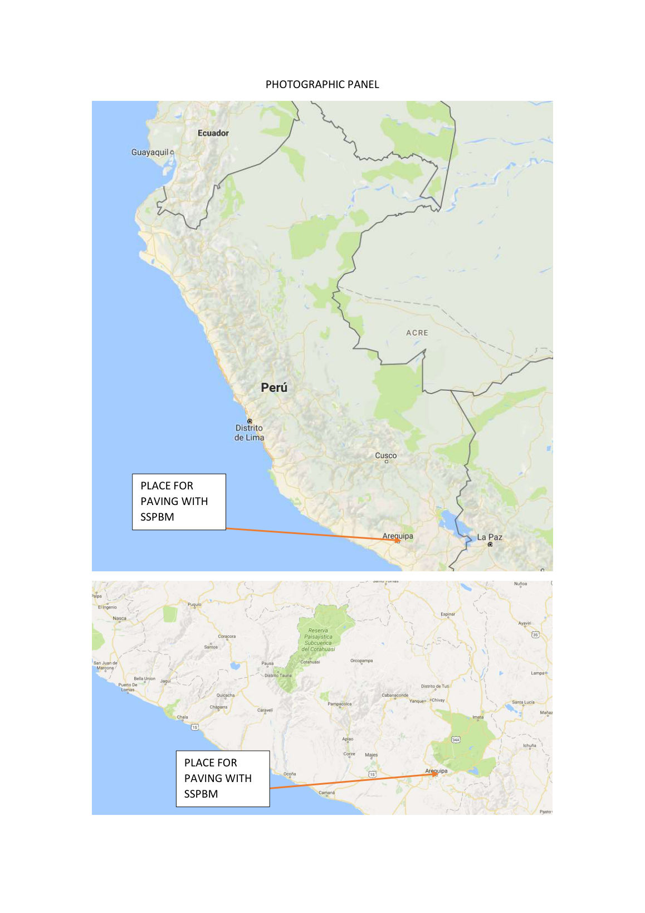
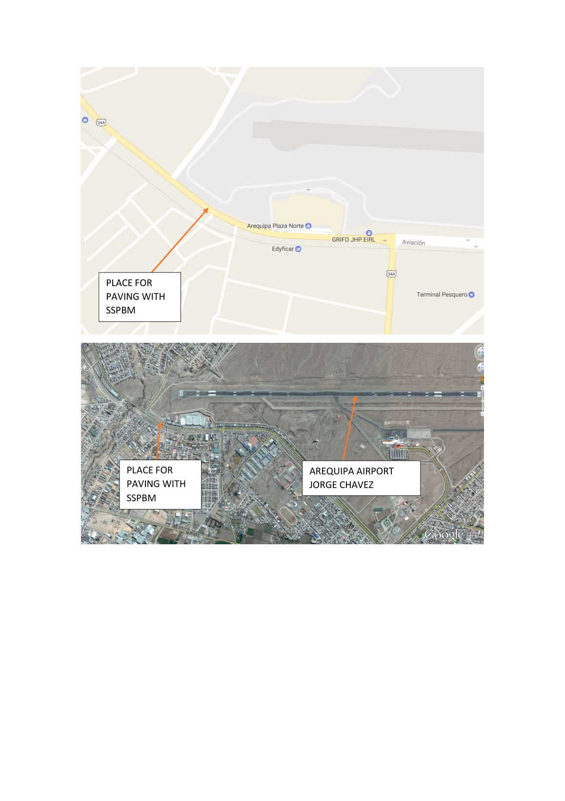
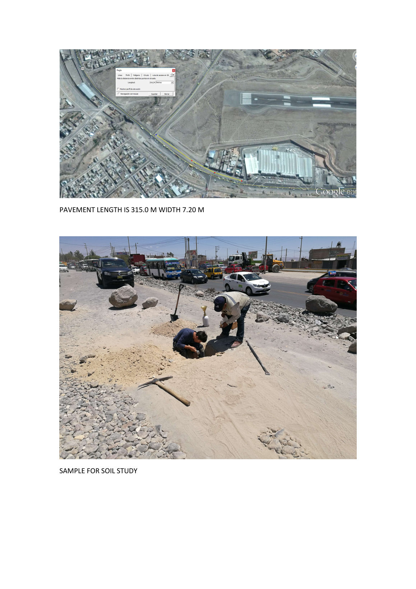
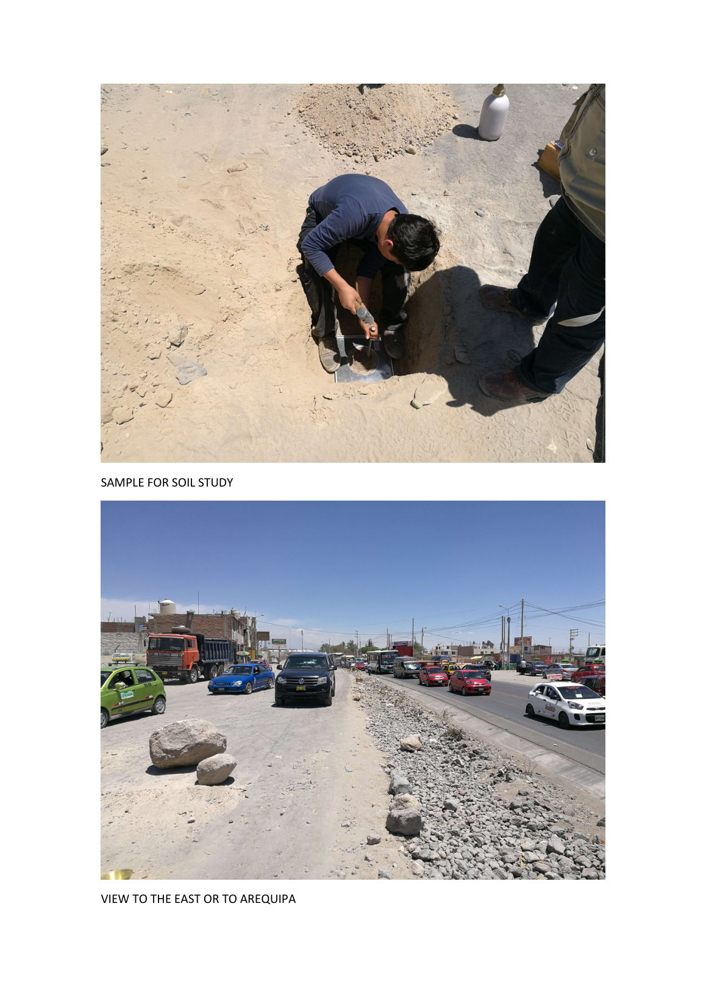
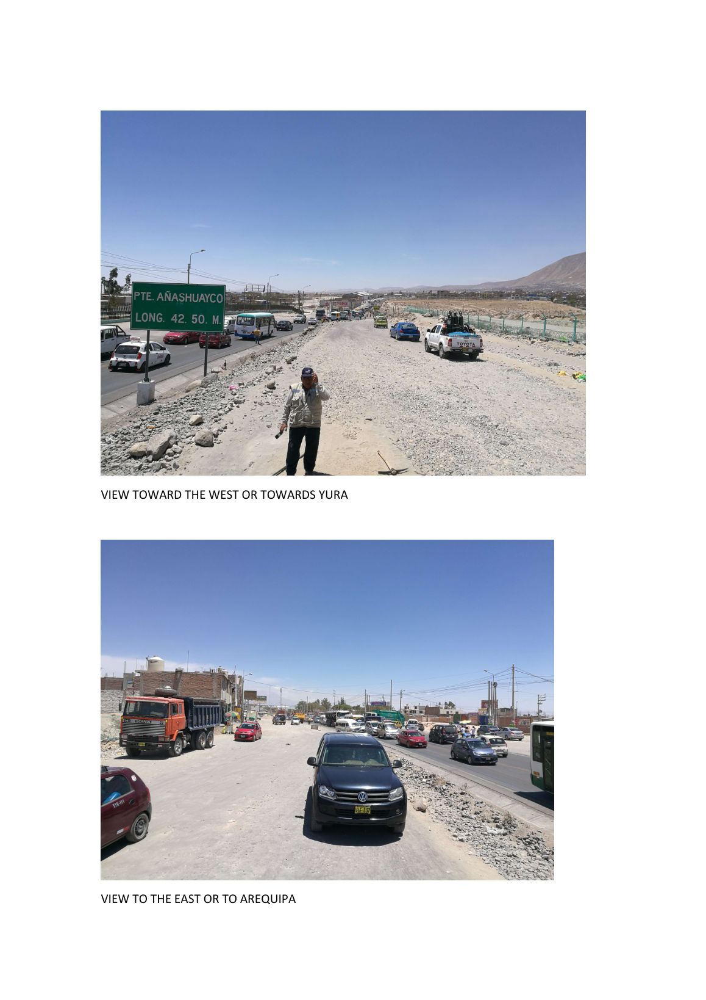
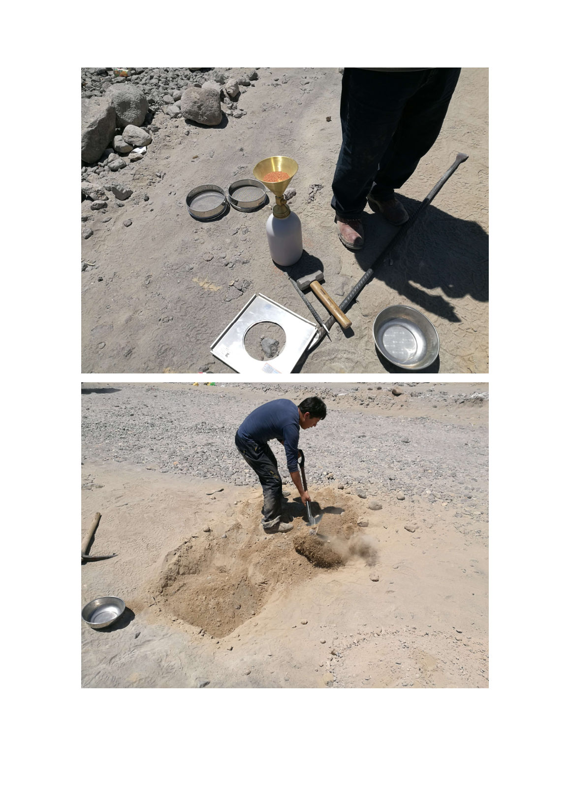

A measured 315-meter section of unpaved frontage road beside the runway of Arequipa's airport, documented pit by pit: test excavations, sand-cone density testing, and soil sampling for a proposed paving section. This is the engineering groundwork that precedes a project — presented as exactly that.
The panel documents a proposed paving section on the Arequipa–Yura corridor (route 34A), running beside the airport runway near the Añashuayco bridge in the Cerro Colorado district — the same district as the completed municipal road in the Peru case study. The section was measured at 315.0 m long by 7.20 m wide.



The crew dug test pits along the section and ran in-situ density tests with a sand-cone apparatus — the standard field method for measuring the density of the ground as it sits. Samples went off for soil study; this is the first step of the same lab-mix-design process documented in the Peru case study.


